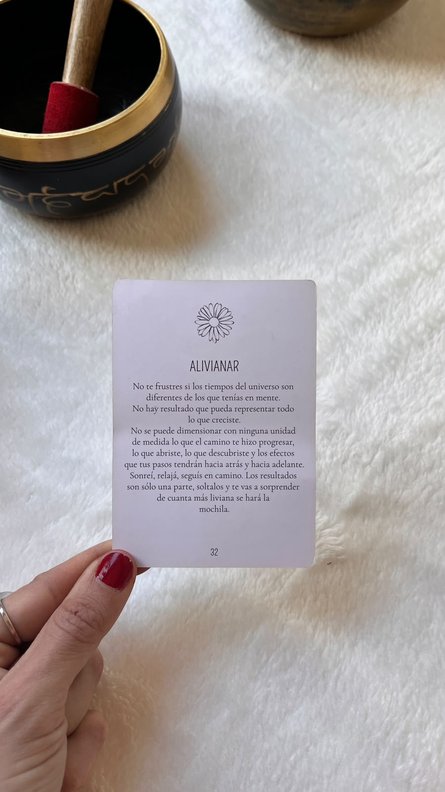

Antes de empezar
Conversamos sobre cómo te sentís, qué necesitás saber y cualquier preferencia para que estés cómoda/o.
Un espacio de bienestar y presencia
Sesiones de Reiki y propuestas de introspección para hacer una pausa, escucharte y estar presente en tu propio camino.
Presencia escucha conexión
Un tiempo para vos
Vive Reiki es un espacio de encuentro y escucha. Podés acercarte con una intención, con una pregunta o, simplemente, con ganas de regalarte un momento de tranquilidad.
Conocé a Priscila.jpg) Un lugar para hacer una pausa
Un lugar para hacer una pausa
Hola, soy Priscila
Soy Priscila Frascino, Maestra de Reiki Usui tradicional. Hace once años acompaño espacios de bienestar a través del Reiki, la meditación y el sonido.
En cada encuentro cuidamos los tiempos y la experiencia de cada persona. Si querés saber más sobre mi recorrido y mi forma de acompañar, escribime.
Más sobre míUna práctica de bienestar
El Reiki Usui tradicional es una práctica de origen japonés que se realiza en un ambiente tranquilo, con la persona vestida y en reposo. Durante el encuentro, la practicante coloca las manos suavemente sobre el cuerpo o las mantiene a poca distancia, de acuerdo con lo que se converse previamente.
Es un espacio complementario de relajación e introspección; no reemplaza la atención, el diagnóstico ni el tratamiento de profesionales de la salud.
Conversamos sobre cómo te sentís, qué necesitás saber y cualquier preferencia para que estés cómoda/o.
Descansás en un espacio sereno. Podés notar una sensación de calma, calor o relajación, o no percibir nada en particular: cada experiencia es distinta.
Nos tomamos un momento para integrar la experiencia. No hace falta tener conocimientos ni cumplir expectativas.
Un espacio a tu medida
Elegí una propuesta o escribime para conversar sobre lo que estás buscando.

Bienestar y presencia
Un momento para relajarte, conectar con el presente y transitar una práctica de bienestar a tu propio ritmo.

Escucha e introspección
Un espacio para explorar preguntas e intenciones personales desde la escucha y la reflexión.
.jpg)
Una mirada simbólica
Una herramienta simbólica para mirar una situación, reconocer preguntas y abrir nuevas perspectivas.

Una invitación a conectar
Mensajes e imágenes simbólicas para hacer una pausa y conectar con tu propia intuición.
La información de duración, modalidad, disponibilidad y valor se comparte al consultar.
Un espacio sin expectativas
El Reiki no promete un resultado determinado. Podés vivirlo como un momento de pausa, atención y bienestar personal.
El Reiki es una práctica complementaria de bienestar y no sustituye tratamientos médicos ni psicológicos. Ante cualquier consulta de salud, recurrí a un/a profesional habilitado/a.
Una propuesta para compartir
Encuentros grupales de meditación, Reiki y sonido para hostels y alojamientos boutique. La propuesta se coordina directamente con cada espacio.
Experiencias compartidas
Este espacio se completará con testimonios auténticos, compartidos con autorización. No publicamos experiencias ni opiniones sin el consentimiento de quienes las vivieron.
¿Querés compartir tu experiencia?Antes de encontrarnos
Si te queda alguna duda, podés escribirme antes de reservar.
Ver todas las respuestasEl Reiki Usui tradicional es una práctica de bienestar de origen japonés que propone un espacio de relajación y atención personal. No reemplaza tratamientos de salud.
Conversamos antes de comenzar y luego tenés un momento tranquilo de descanso. Al final, dejamos un espacio para integrar la experiencia. Podés preguntar o compartir solo lo que te resulte cómodo.
La duración y el valor dependen de la propuesta. Escribime y te comparto la información actualizada antes de que decidas.
No. Antes de empezar conversamos sobre lo que podés esperar y cualquier duda que tengas.
Consultame por la modalidad y la disponibilidad de cada propuesta; te cuento las opciones vigentes.
Completá el formulario de contacto y se abrirá WhatsApp con el mensaje preparado para que lo revises y elijas si querés enviarlo.
El primer paso es conversar
Contame qué estás buscando. Podés consultar sin compromiso y recibir la información antes de coordinar.
Disponibilidad y modalidadA coordinar al momento de la consulta.